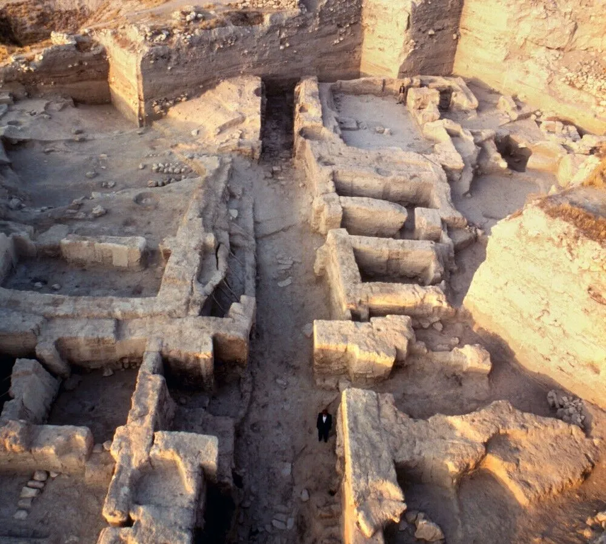
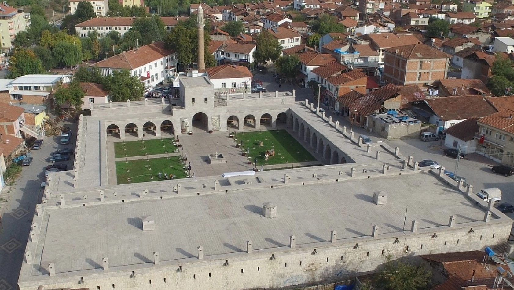
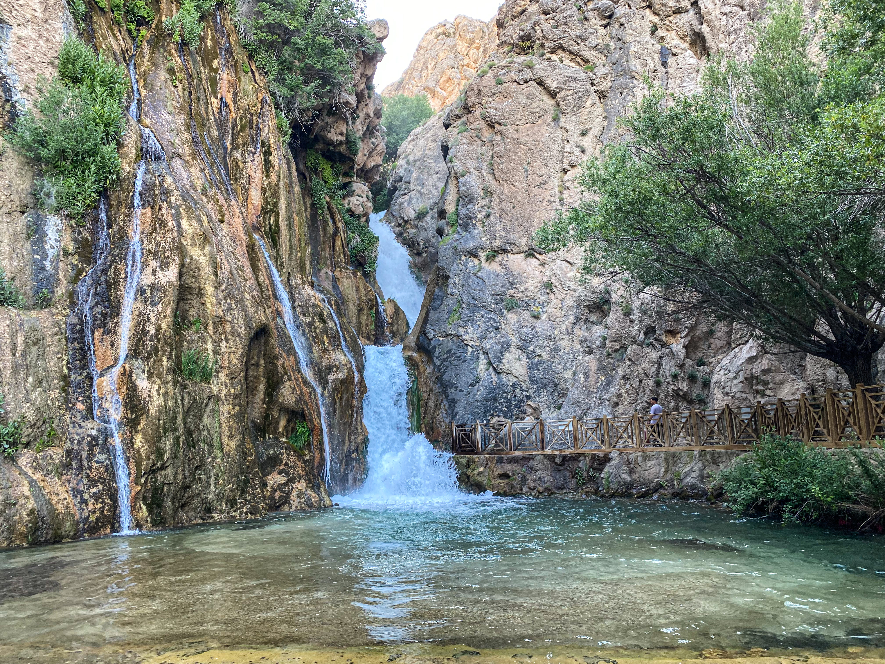

Şehrim: Malatya
Malatya, Doğu Anadolu Bölgesi'nde yer alan tarihi ve kültürel açıdan önemli şehirlerden biridir. Türkiye'de özellikle kayısısı ile tanınan Malatya, tarım, tarih ve doğal güzellikleriyle öne çıkar.
2025 yılı Adrese Dayalı Nüfus Kayıt Sistemi sonuçlarına göre Malatya'nın nüfusu 755.854 kişidir. Şehrin en kalabalık ilçeleri Yeşilyurt ve Battalgazi'dir.
Malatya; Arslantepe Höyüğü, Levent Vadisi, Silahtar Mustafa Paşa Kervansarayı ve Günpınar Şelalesi gibi önemli turistik ve tarihi mekanlara ev sahipliği yapar. Bu özellikleriyle Malatya, hem tarihi hem de doğal zenginliklere sahip bir şehirdir.

Arslantepe Höyüğü
UNESCO Dünya Mirası Listesi'nde yer alan önemli bir arkeolojik alandır.
Levent Vadisi
Doğal güzelliği ve cam seyir terası ile ünlü turistik bir bölgedir.

Silahtar Mustafa Paşa Kervansarayı
Osmanlı dönemine ait önemli tarihi yapılardan biridir.

Günpınar Şelalesi
Darende ilçesinde bulunan, doğal güzelliğiyle ünlü önemli turistik alanlardan biridir.
Gezilecek Yerler
Arslantepe Höyüğü
Malatya'nın Battalgazi ilçesinde bulunan Arslantepe Höyüğü, yaklaşık 7000 yıllık geçmişe sahip önemli bir arkeolojik yerleşim alanıdır. Devlet yapısının ilk örneklerinin görüldüğü bu alan, 2021 yılında UNESCO Dünya Mirası Listesi'ne dahil edilmiştir.
Levent Vadisi
Levent Vadisi, Malatya'nın Akçadağ ilçesinde bulunan ve doğal kaya oluşumları ile dikkat çeken önemli bir turistik bölgedir. Vadide bulunan cam seyir terası, ziyaretçilere etkileyici bir manzara sunar.
Silahtar Mustafa Paşa Kervansarayı
17. yüzyılda Osmanlı döneminde inşa edilen bu kervansaray, tarihi İpek Yolu üzerinde önemli bir konaklama noktası olmuştur. Günümüzde restore edilerek turistik amaçlı kullanılmaktadır.
Günpınar Şelalesi
Darende ilçesinde yer alan Günpınar Şelalesi, yaklaşık 40 metre yüksekliği ile Malatya'nın en önemli doğal güzelliklerinden biridir. Özellikle yaz aylarında serinlemek ve doğa ile iç içe vakit geçirmek isteyenler için popülerdir.